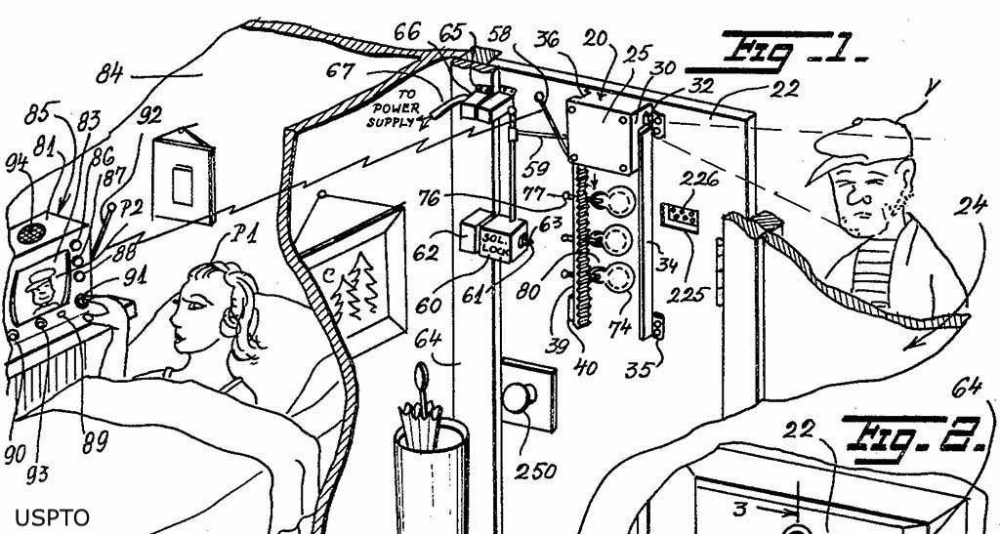

Brown as my Mirror
Marie van Brittan Brown has contributed to a lasting impact on the safety of millions of people. By sharing her work, she revolutionized home safety by inventing the first closed-circuit telivision security system, laying the foundation for modern home surveillance and security technology. I see Brown as a mirror. I really admire her and aspire to be like her, taking action on a variety of issues and disparities in our society today and sharing my work to help uplift people's lives, even by a small amount.
